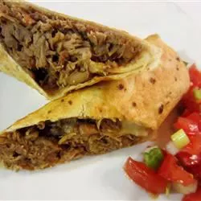

Burritos were already a gift to man. This just made them so much more enticing to the soul.
Let the pork roll and the mouth drool. Napkins not included.
- 3 pounds pork butt roast with bone
- 1 medium onion, sliced
- 6 cloves garlic, chopped
- 2 (1.25 ounce) packages taco seasoning mix, divided
- 1 (16 ounce) can refried beans
- 1 (14.5 ounce) can diced tomatoes
- 1 (4 ounce) can chopped green chiles, or to taste
- 1 (16 ounce) package shredded Cheddar cheese
- 20 (8 inch) flour tortillas
- 1/4 cup vegetable oil
-
Place pork roast, onion, and garlic into a large pot. Sprinkle one package taco seasoning over top and add enough water to cover roast. Set over medium-high heat and bring to a boil. Reduce the heat to medium-low and simmer until meat is tender and can be pulled apart with a fork, 2 to 3 hours. Check water level every 45 minutes, adding more as needed. Carefully transfer roast to a cutting board. Discard vegetables, but reserve about 1 cup cooking liquid.
-
Shred pork with a fork, discarding any excess fat. Place pork into a mixing bowl with refried beans, tomatoes, refried beans, chiles, and remaining taco seasoning. Mix until well combined, adding reserved cooking liquid if mixture is too dry.
-
Spread pork mixture evenly down the center of each tortilla, then sprinkle with Cheddar cheese. Fold the bottom and top edges of each tortilla over the filling, then roll from one side to form a burrito.
-
Heat 2 tablespoons oil in a large skillet over medium heat. Place two burritos into the hot oil with the seams facing down. Fry until golden, about 2 minutes. flip and repeat on the other side. Drain on a paper towel-lined plate. Continue to fry remaining burritos in batches of two.
Go Back